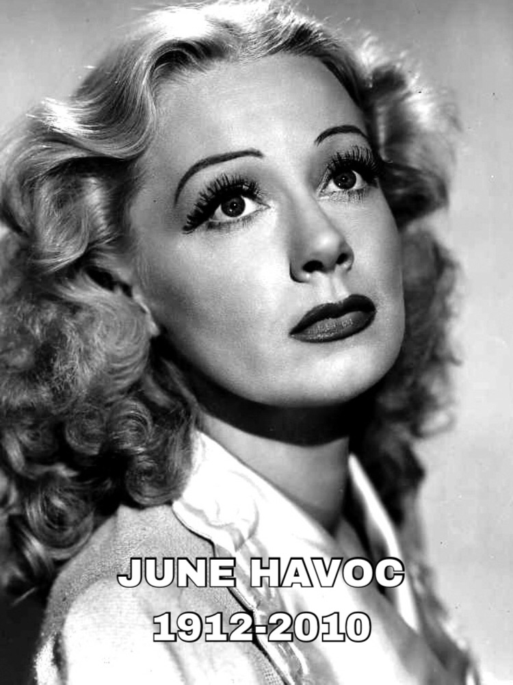

NOTABLE PEOPLE OF STAMFORD
ART
FILM
MUSIC

JUNE HAVOC:MUSICIAN
Actress, dancer, writer, director
Best known for “Baby June” in “Gypsy”
Child vaudeville performer
Purchased/founded Cannon Crossing in Connecticut
Discography